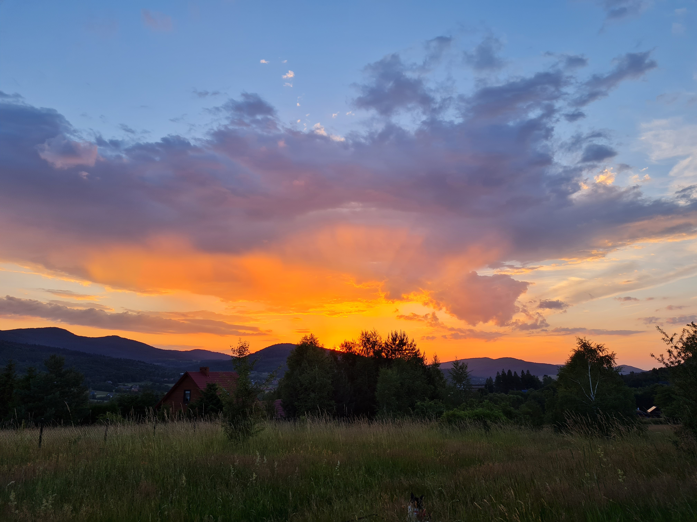
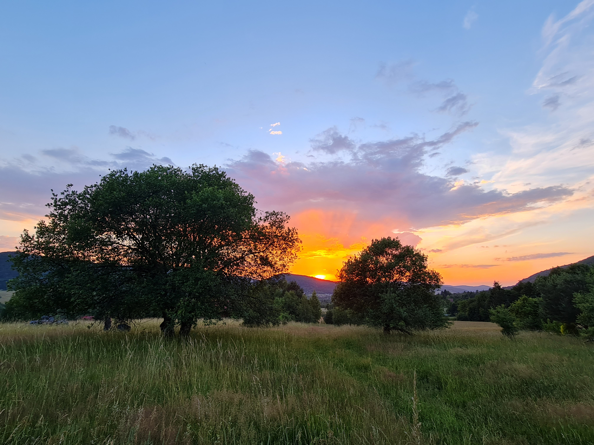
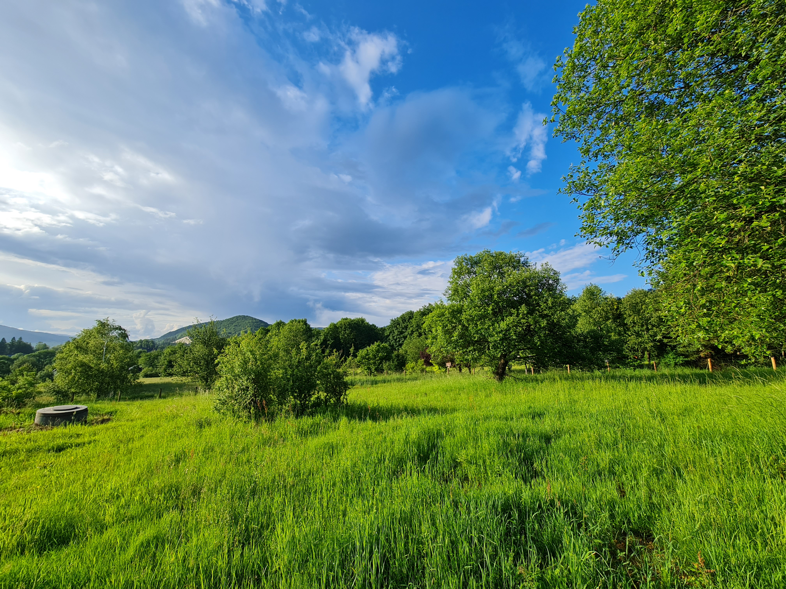
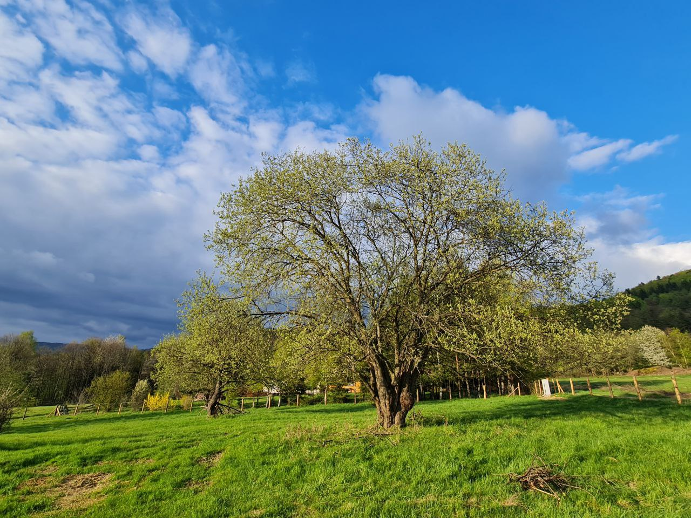
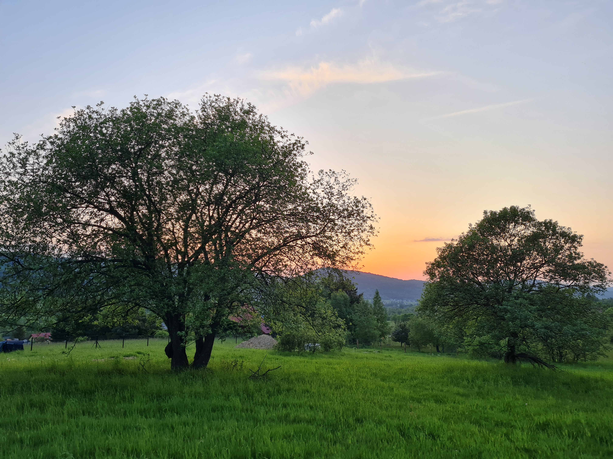
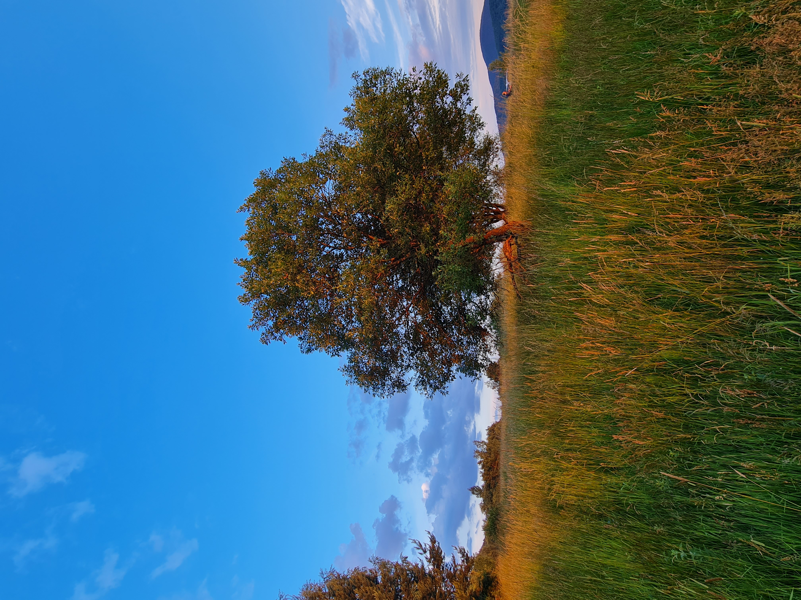
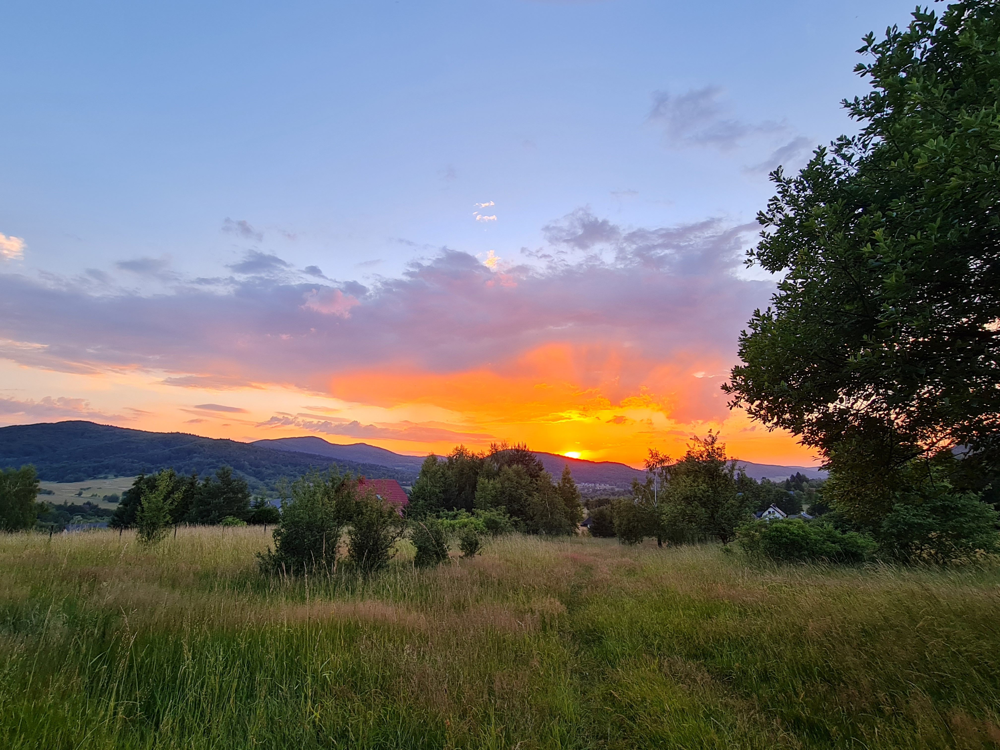
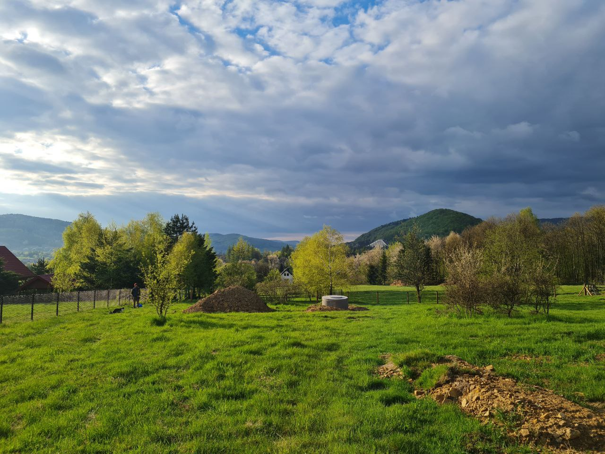
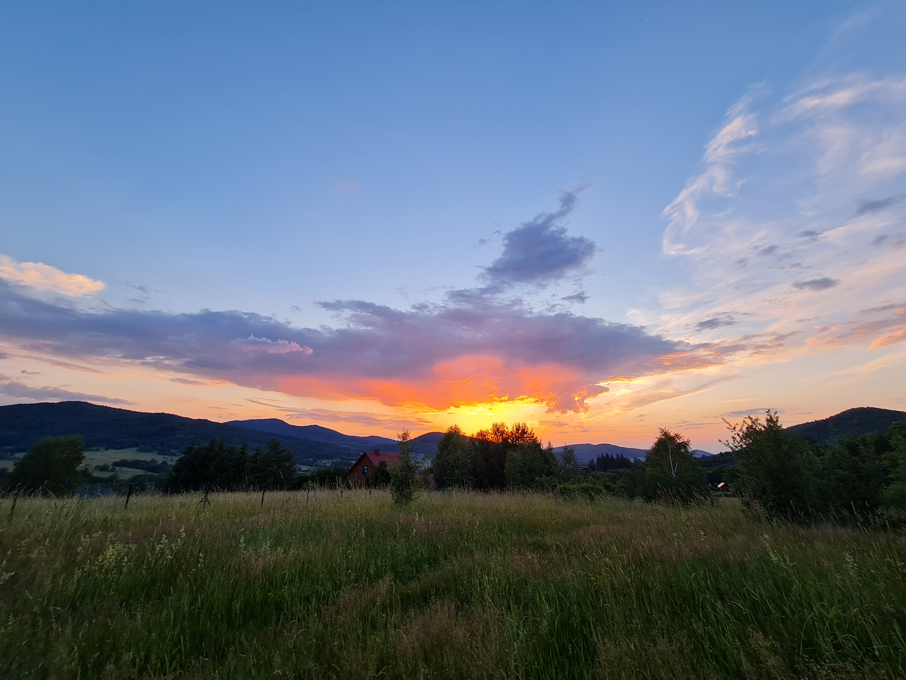
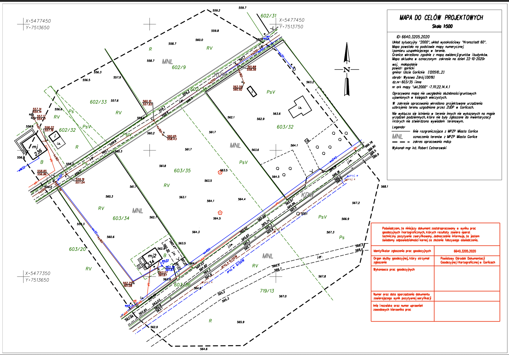

Dwie działki obok siebie
Spójny układ dwóch sąsiadujących parceli położonych jedna pod drugą.
2 działki widokowe · obecny numer 603/35 · ok. 12 ar każda
Działki budowlane na sprzedaż w Wysowej-Zdroju
"To miejsce dla kogoś, kto chce mieć widok, przestrzeń i ciszę, ale bez odcinania się od miejscowości i jej infrastruktury."
Układ terenu
dwie działki na tym samym zboczu
Lokalizacja
las, uzdrowisko i codzienna wygoda
Potencjał
dom, drugi dom albo spokojna inwestycja
01
Oferta
Dwie parcele, jeden spójny widokowy potencjał.
Na sprzedaż są dwie widokowe działki budowlane położone obok siebie w Wysowej-Zdroju, na tym samym zboczu, jedna pod drugą.
Obecnie nieruchomość stanowi jedną działkę o numerze 603/35, przeznaczoną do podziału na dwie mniejsze. Każda z nich będzie miała około 12 arów, a łączna powierzchnia obu parceli wynosi 24,5 ar. Istnieje możliwość zakupu obu działek jednocześnie albo każdej z osobna.
Zakup razem lub osobno
Możesz potraktować ofertę jako większą całość albo nabyć jedną z działek oddzielnie.Wygodna lokalizacja
Blisko centrum Wysowej-Zdroju, a jednocześnie blisko lasu.Położenie widokowe
To spokojna część stoku z zielonym otoczeniem i otwartą panoramą Beskidu Niskiego.
02
Parametry
Podstawowe dane
Liczba działek2
Aktualny numer działki603/35
Powierzchnia każdejok. 12 ar
Łączna powierzchnia24,5 ar
Klasy użytkówRV, PsV
Plan miejscowyMPZP
Symbol planuMNU
PrzeznaczenieZabudowa mieszkaniowa jednorodzinna i usługowa
UkładPołożone obok siebie, jedna pod drugą
UkształtowanieTen sam stok, dobre nasłonecznienie
Dostęp i infrastruktura
DojazdDroga szutrowa
PrądDostępny
KanalizacjaDostępna
WodociągDostępny
DodatkowoWłasna studnia
SprzedażObie działki razem lub każda osobno
Dlaczego ten układ się wyróżnia
-
01
Dwie działki, dwa scenariusze zakupu
Możesz kupić obie działki jednocześnie i stworzyć większy, spójny teren albo zdecydować się na zakup jednej z nich osobno, zależnie od potrzeb.
-
02
Widok, który buduje wartość miejsca
Ze zbocza rozciąga się szeroki widok na dolinę i górską panoramę, a cały układ działek ma wyraźnie wypoczynkowy, spokojny charakter.
-
03
Bliskość natury bez izolacji
Wejście do lasu znajduje się w odległości około 200 metrów, a dojście do centrum uzdrowiska zajmuje około 10 minut.
-
04
Dobre warunki pod budowę
Dwie działki na tym samym zboczu można zaplanować jako jeden większy koncept prywatny lub bardziej elastycznie podejść do zabudowy i podziału funkcji.
2
widokowe działki obok siebie
24,5 ar
łącznej powierzchni
603/35
aktualny numer działki przed podziałem
234 tys.
cena jednej działki
03
Galeria
Zobacz działkę i układ obu parceli w krajobrazie.









04
Lokalizacja
Uzdrowisko, góry i codzienny kontakt z krajobrazem.
Wysowa-Zdrój to kameralna miejscowość uzdrowiskowa położona w śródgórskiej dolinie Beskidu Niskiego, ceniona za ciszę, mikroklimat, Park Zdrojowy, pijalnię wód mineralnych i rozbudowaną sieć szlaków.
Działka leży w miejscu, które pozwala korzystać z atutów uzdrowiska i natury jednocześnie: spacerowo dojść do usług, a po kilku minutach wejść do lasu lub ruszyć na górskie trasy piesze, rowerowe i konne.
Szybki dostęp do
Sklepy, poczta, apteka, ośrodek zdrowiaok. 250 m
Kościółok. 400 m
Park Zdrojowyok. 700 m
Centrum SPA i kryta pływalniaok. 1700 m

Szlaki piesze, rowerowe, konne i zimowe trasy w zasięgu codziennego wyjścia.
Park Zdrojowy, wody mineralne, spokojne tempo i brak wielkomiejskiego zgiełku.
Latem góry i wydarzenia w uzdrowisku, zimą pobliskie wyciągi w Małastowie, Smerekowcu i na Magurze Małastowskiej.
05
Atuty
Działka, na której naprawdę czuć Beskid Niski.
Okolica sprzyja spokojnemu życiu i wypoczynkowi. Lasy, pola, trasy turystyczne i widokowe położenie sprawiają, że można tu zarówno zamieszkać na stałe, jak i stworzyć większą prywatną przestrzeń złożoną z dwóch parceli na weekendy i wakacje.
"To miejsce dla kogoś, kto chce mieć widok, przestrzeń i ciszę, ale bez odcinania się od miejscowości i jej infrastruktury."
Panorama i zachody słońca
Wschodnie położenie na zboczu daje atrakcyjny widok na dolinę i okoliczne góry, a ekspozycja działki buduje poczucie przestrzeni.
Spokój i prywatność
Malownicza, cicha okolica sprzyja wypoczynkowi, pracy zdalnej i życiu blisko natury.
Potencjał turystyczny regionu
W pobliżu znajdują się szlaki, stadnina koni huculskich w Regietowie oraz zalew Klimkówka, ceniony przez miłośników wody i wędkarstwa.
Miejsce na lata
To układ dwóch działek, który łączy walory krajobrazowe, funkcję budowlaną i większy zapas przestrzeni w atrakcyjnej lokalizacji.
07
Cena i kontakt
234 000 zł za jedną działkę.
Dwie sąsiadujące działki budowlane w Wysowej-Zdroju, położone jedna pod drugą na tym samym zboczu, z przeznaczeniem MNU i dostępem do infrastruktury.
Istnieje możliwość zakupu obu działek jednocześnie albo każdej z nich osobno. Aktualny numer działki przed podziałem to 603/35.